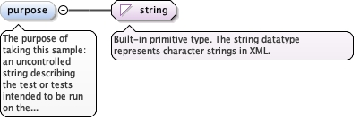

<element minOccurs="0" maxOccurs="1" name="currentDesign" type="diggs:ProgramDesignReferencePropertyType"><annotation><documentation>The program design this activity was carried out to realize, as currently planned.</documentation></annotation></element>
A design that governed this activity at an earlier point, before alater design superseded it. Use designRole and effectiveFrom on thereference to state which design and when.
<element minOccurs="0" maxOccurs="unbounded" name="previousDesign" type="diggs:ProgramDesignReferencePropertyType"><annotation><documentation>A design that governed this activity at an earlier point, before a later design superseded it. Use designRole and effectiveFrom on the reference to state which design and when.</documentation></annotation></element>
<element name="samplingLocation" type="diggs:LocationPropertyType" minOccurs="1"><annotation><documentation>The geographic location of the sampling activity.</documentation></annotation></element>
The sample or samples used to create the samples produced by thisactivity (see sampleProduced). Used only for activities thatsubsample or aggregate other samples. For an aggregate, thepercentage attribute can state how much of the new sample iscomposed of the source sample.
The gml:identifier value of the referenced feature, as a fully qualifiedvalue. It gives an alternative to the gml:id in xlink:href for findingthe referenced feature, mainly to reference a feature by a globallyunique identifier and where naming conflicts occur with gml:id whenaccessing data in external files.
<element minOccurs="0" name="sourceSampleRef" maxOccurs="unbounded" type="diggs:FractionalReferenceType"><annotation><appinfo source="urn:x-gml:targetElement">diggs:Sample/@gml:id</appinfo><documentation>The sample or samples used to create the samples produced by this activity (see sampleProduced). Used only for activities that subsample or aggregate other samples. For an aggregate, the percentage attribute can state how much of the new sample is composed of the source sample.</documentation></annotation></element>
The classification of the sampling activity, which applications canuse to validate other activity information. The samples the activityproduces are expected to agree with the value: for aggregate, thesamples carry more than one sourceSampleRef; for subsample, onlyone; for test, neither a sourceSampleRef nor a samplingFeatureRef,the activity pointing to a project only. Values come from theenumerated list.
The activity created samples by aggregating existing samples; the associatedsamples contain more than one sourceSampleRef.
enumeration
collect
The activity created samples by collection from a sampling feature.
enumeration
none
The activity failed to produce any physical sample.
enumeration
subsample
The activity created samples by subsampling an existing sample; theassociated samples contain only one sourceSampleRef.
enumeration
test
The activity produced a test, standard or blank sample that does not relateto any field sample or sampling feature; the activity points to a project,and the associated samples have neither sourceSampleRef norsamplingFeatureRef.
enumeration
unknown
No information about the sampling activity exists, for example for legacydata where only the sample name or label and the location (depth) are known.
Source
<element name="activityType" type="diggs:ActivityTypeEnumType"><annotation><documentation>The classification of the sampling activity, which applications can use to validate other activity information. The samples the activity produces are expected to agree with the value: for aggregate, the samples carry more than one sourceSampleRef; for subsample, only one; for test, neither a sourceSampleRef nor a samplingFeatureRef, the activity pointing to a project only. Values come from the enumerated list.</documentation></annotation></element>
<element minOccurs="0" name="lengthLongestPortion" type="diggs:LengthMeasureType"><annotation><documentation>For rock cores, the length of the longest solid, cylindrical core piece of the sample.</documentation></annotation></element>
The purpose of taking this sample: an uncontrolled string describingthe test or tests intended to be run on the samples generated bythis activity.
Diagram

Type
string
Properties
content
simple
minOccurs
0
Source
<element minOccurs="0" name="purpose" type="string"><annotation><documentation>The purpose of taking this sample: an uncontrolled string describing the test or tests intended to be run on the samples generated by this activity.</documentation></annotation></element>
<element minOccurs="0" name="rockQualityDesignationLength" type="diggs:LengthMeasureType"><annotation><documentation>For rock cores, the sum of the lengths of core pieces longer than 100 mm (4 in), measured along the centerline.</documentation></annotation></element>
For rock cores, the rock quality designation of the samplingactivity: rockQualityDesignationLength divided by the core run (thelength of the sampling activity interval).
<element minOccurs="0" name="samplingActivityRQD" type="diggs:LengthPerLengthMeasureType"><annotation><documentation>For rock cores, the rock quality designation of the sampling activity: rockQualityDesignationLength divided by the core run (the length of the sampling activity interval).</documentation></annotation></element>
<element maxOccurs="unbounded" minOccurs="0" name="sampleProduced" type="diggs:SampleProducedPropertyType"><annotation><documentation>The samples produced by this sampling activity and, optionally, the time and location of each.</documentation></annotation></element>
For sampling of soil or rock, the means by which the sampler isinserted into the ground, for example pushed or driven. Use theDIGGS dictionary samplerInsertionMethod.xml for the list of values.
<element minOccurs="0" name="samplerInsertionMethod" type="gml:CodeType"><annotation><documentation>For sampling of soil or rock, the means by which the sampler is inserted into the ground, for example pushed or driven. Use the DIGGS dictionary samplerInsertionMethod.xml for the list of values.</documentation></annotation></element>
The ISO 22475-1 sampling category (A to E) achieved by the techniqueand equipment of this sampling activity: how much the techniquedisturbs the material sampled, independent of what was actuallyrecovered. See diggs:SampleType/qualityClass for the related butdistinct soil quality class of the sample. Use the DIGGS dictionarysamplingCategory.xml for the list of values.
<element minOccurs="0" name="samplingCategory" type="gml:CodeType"><annotation><documentation>The ISO 22475-1 sampling category (A to E) achieved by the technique and equipment of this sampling activity: how much the technique disturbs the material sampled, independent of what was actually recovered. See diggs:SampleType/qualityClass for the related but distinct soil quality class of the sample. Use the DIGGS dictionary samplingCategory.xml for the list of values.</documentation></annotation></element>
<element minOccurs="0" name="samplingDate" type="diggs:TimeIntervalPropertyType"><annotation><documentation>The date and time interval that encompasses the entire time over which sampling occurred.</documentation></annotation></element>
<element minOccurs="0" name="samplingEnvironment" type="diggs:EnvironmentPropertyType" maxOccurs="unbounded"><annotation><documentation>A collection of environmental parameters recorded at a specific time instant during the sampling. Repeat for each recording.</documentation></annotation></element>
<element name="samplingEquipment" type="diggs:EquipmentPropertyType" maxOccurs="unbounded" minOccurs="0"><annotation><appinfo>diggs:AbstractEquipment</appinfo><documentation>The sampling equipment used, as an equipment feature or a reference to one. Repeat for each item.</documentation></annotation></element>
The method of sampling, as a diggs:Specification or, where themethod is a driven penetration test, a reference (xlink:href) to thediggs:DrivenPenetrationTest procedure of the diggs:Test thatproduced the samples.
<element name="samplingMethod" type="diggs:SamplingMethodPropertyType" maxOccurs="unbounded" minOccurs="0"><annotation><documentation>The method of sampling, as a diggs:Specification or, where the method is a driven penetration test, a reference (xlink:href) to the diggs:DrivenPenetrationTest procedure of the diggs:Test that produced the samples.</documentation></annotation></element>
<element minOccurs="0" name="solidCoreRecoveryLength" type="diggs:LengthMeasureType"><annotation><documentation>For rock cores, the sum of the lengths of solid, cylindrical core pieces.</documentation></annotation></element>
For soil or rock cores, the total length of sample recovered duringthe activity; 0 if none was recovered. It can also be derived iftotalSampleRecovery is reported.
<element minOccurs="0" name="totalSampleRecoveryLength" type="diggs:LengthMeasureType"><annotation><documentation>For soil or rock cores, the total length of sample recovered during the activity; 0 if none was recovered. It can also be derived if totalSampleRecovery is reported.</documentation></annotation></element>
For core samples from boreholes, the derived ratio oftotalSampleRecoveryLength to the length of the sampling activityinterval, typically reported as a percent.
The unit of measure for dimensionless ratio or index.
Source
<element minOccurs="0" name="totalSampleRecovery" type="diggs:DimensionlessMeasureType"><annotation><documentation>For core samples from boreholes, the derived ratio of totalSampleRecoveryLength to the length of the sampling activity interval, typically reported as a percent.</documentation></annotation></element>
<element minOccurs="0" name="mixingTime" type="diggs:TimeMeasureType"><annotation><documentation>For sampling activities that blend samples in aggregation, such as soil-cement mixtures, the time taken to mix the samples together.</documentation></annotation></element>
<element maxOccurs="unbounded" minOccurs="0" name="otherSamplingActivityProperty" type="diggs:ParameterPropertyType"><annotation><documentation>A parameter reporting ancillary metadata about the sampling activity. Repeat for each property.</documentation></annotation></element>
The unit of measure for pressure, stress, or elastic modulus.
Source
<element maxOccurs="1" minOccurs="0" name="coringPushPressure" type="diggs:PressureMeasureType"><annotation><documentation>For coring activities, the push pressure reported as a single value.</documentation></annotation></element>
The unit of measure for pressure, stress, or elastic modulus.
Source
<element maxOccurs="1" minOccurs="0" name="coringPushPressureMin" type="diggs:PressureMeasureType"><annotation><documentation>For coring push pressure reported as a range, the minimum pressure.</documentation></annotation></element>
The unit of measure for pressure, stress, or elastic modulus.
Source
<element maxOccurs="1" minOccurs="0" name="coringPushPressureMax" type="diggs:PressureMeasureType"><annotation><documentation>For coring push pressure reported as a range, the maximum pressure.</documentation></annotation></element>
Complex Type diggs:AbstractSamplingActivityType
Namespace
http://diggsml.org/schemas/3
Annotations
Abstract base type for sampling activities that collect materials from samplingfeatures.
Database handle for the object. It is of XML type ID, so is constrained to beunique in the XML document within which it occurs. An external identifier for the object inthe form of a URI may be constructed using standard XML and XPointer methods. This is doneby concatenating the URI for the document, a fragment separator, and the value of the idattribute.
Source
<complexType name="AbstractSamplingActivityType" abstract="true"><annotation><documentation>Abstract base type for sampling activities that collect materials from sampling features.</documentation></annotation><complexContent><extension base="diggs:AbstractFeatureType"><sequence><element ref="diggs:investigationTarget" maxOccurs="unbounded" minOccurs="0"/><element ref="diggs:projectRef" maxOccurs="unbounded"/><element minOccurs="0" ref="diggs:programRef"/><element minOccurs="0" maxOccurs="1" name="currentDesign" type="diggs:ProgramDesignReferencePropertyType"><annotation><documentation>The program design this activity was carried out to realize, as currently planned.</documentation></annotation></element><element minOccurs="0" maxOccurs="unbounded" name="previousDesign" type="diggs:ProgramDesignReferencePropertyType"><annotation><documentation>A design that governed this activity at an earlier point, before a later design superseded it. Use designRole and effectiveFrom on the reference to state which design and when.</documentation></annotation></element><element minOccurs="0" maxOccurs="unbounded" ref="diggs:programSpecificationRef"><annotation><documentation>The program specification objects this activity must satisfy.</documentation></annotation></element><element minOccurs="0" ref="diggs:constructionActivityRef"/><choice><sequence><element ref="diggs:samplingFeatureRef" minOccurs="1" maxOccurs="1"/><element name="samplingLocation" type="diggs:LocationPropertyType" minOccurs="1"><annotation><documentation>The geographic location of the sampling activity.</documentation></annotation></element></sequence><sequence><element maxOccurs="unbounded" minOccurs="0" ref="diggs:associatedProjectRef"/><element minOccurs="0" ref="diggs:originalProjectRef"/></sequence></choice><element minOccurs="0" name="sourceSampleRef" maxOccurs="unbounded" type="diggs:FractionalReferenceType"><annotation><appinfo source="urn:x-gml:targetElement">diggs:Sample/@gml:id</appinfo><documentation>The sample or samples used to create the samples produced by this activity (see sampleProduced). Used only for activities that subsample or aggregate other samples. For an aggregate, the percentage attribute can state how much of the new sample is composed of the source sample.</documentation></annotation></element><element name="activityType" type="diggs:ActivityTypeEnumType"><annotation><documentation>The classification of the sampling activity, which applications can use to validate other activity information. The samples the activity produces are expected to agree with the value: for aggregate, the samples carry more than one sourceSampleRef; for subsample, only one; for test, neither a sourceSampleRef nor a samplingFeatureRef, the activity pointing to a project only. Values come from the enumerated list.</documentation></annotation></element><element minOccurs="0" name="lengthLongestPortion" type="diggs:LengthMeasureType"><annotation><documentation>For rock cores, the length of the longest solid, cylindrical core piece of the sample.</documentation></annotation></element><element minOccurs="0" name="purpose" type="string"><annotation><documentation>The purpose of taking this sample: an uncontrolled string describing the test or tests intended to be run on the samples generated by this activity.</documentation></annotation></element><element minOccurs="0" name="rockQualityDesignationLength" type="diggs:LengthMeasureType"><annotation><documentation>For rock cores, the sum of the lengths of core pieces longer than 100 mm (4 in), measured along the centerline.</documentation></annotation></element><element minOccurs="0" name="samplingActivityRQD" type="diggs:LengthPerLengthMeasureType"><annotation><documentation>For rock cores, the rock quality designation of the sampling activity: rockQualityDesignationLength divided by the core run (the length of the sampling activity interval).</documentation></annotation></element><element maxOccurs="unbounded" minOccurs="0" name="sampleProduced" type="diggs:SampleProducedPropertyType"><annotation><documentation>The samples produced by this sampling activity and, optionally, the time and location of each.</documentation></annotation></element><element minOccurs="0" name="samplerInsertionMethod" type="gml:CodeType"><annotation><documentation>For sampling of soil or rock, the means by which the sampler is inserted into the ground, for example pushed or driven. Use the DIGGS dictionary samplerInsertionMethod.xml for the list of values.</documentation></annotation></element><element minOccurs="0" name="samplingCategory" type="gml:CodeType"><annotation><documentation>The ISO 22475-1 sampling category (A to E) achieved by the technique and equipment of this sampling activity: how much the technique disturbs the material sampled, independent of what was actually recovered. See diggs:SampleType/qualityClass for the related but distinct soil quality class of the sample. Use the DIGGS dictionary samplingCategory.xml for the list of values.</documentation></annotation></element><element minOccurs="0" name="samplingDate" type="diggs:TimeIntervalPropertyType"><annotation><documentation>The date and time interval that encompasses the entire time over which sampling occurred.</documentation></annotation></element><element minOccurs="0" name="samplingEnvironment" type="diggs:EnvironmentPropertyType" maxOccurs="unbounded"><annotation><documentation>A collection of environmental parameters recorded at a specific time instant during the sampling. Repeat for each recording.</documentation></annotation></element><element name="samplingEquipment" type="diggs:EquipmentPropertyType" maxOccurs="unbounded" minOccurs="0"><annotation><appinfo>diggs:AbstractEquipment</appinfo><documentation>The sampling equipment used, as an equipment feature or a reference to one. Repeat for each item.</documentation></annotation></element><element name="samplingMethod" type="diggs:SamplingMethodPropertyType" maxOccurs="unbounded" minOccurs="0"><annotation><documentation>The method of sampling, as a diggs:Specification or, where the method is a driven penetration test, a reference (xlink:href) to the diggs:DrivenPenetrationTest procedure of the diggs:Test that produced the samples.</documentation></annotation></element><element minOccurs="0" name="solidCoreRecoveryLength" type="diggs:LengthMeasureType"><annotation><documentation>For rock cores, the sum of the lengths of solid, cylindrical core pieces.</documentation></annotation></element><element minOccurs="0" name="totalSampleRecoveryLength" type="diggs:LengthMeasureType"><annotation><documentation>For soil or rock cores, the total length of sample recovered during the activity; 0 if none was recovered. It can also be derived if totalSampleRecovery is reported.</documentation></annotation></element><element minOccurs="0" name="totalSampleRecovery" type="diggs:DimensionlessMeasureType"><annotation><documentation>For core samples from boreholes, the derived ratio of totalSampleRecoveryLength to the length of the sampling activity interval, typically reported as a percent.</documentation></annotation></element><element minOccurs="0" name="mixingTime" type="diggs:TimeMeasureType"><annotation><documentation>For sampling activities that blend samples in aggregation, such as soil-cement mixtures, the time taken to mix the samples together.</documentation></annotation></element><element maxOccurs="unbounded" minOccurs="0" name="otherSamplingActivityProperty" type="diggs:ParameterPropertyType"><annotation><documentation>A parameter reporting ancillary metadata about the sampling activity. Repeat for each property.</documentation></annotation></element><choice><element maxOccurs="1" minOccurs="0" name="coringPushPressure" type="diggs:PressureMeasureType"><annotation><documentation>For coring activities, the push pressure reported as a single value.</documentation></annotation></element><sequence><element maxOccurs="1" minOccurs="0" name="coringPushPressureMin" type="diggs:PressureMeasureType"><annotation><documentation>For coring push pressure reported as a range, the minimum pressure.</documentation></annotation></element><element maxOccurs="1" minOccurs="0" name="coringPushPressureMax" type="diggs:PressureMeasureType"><annotation><documentation>For coring push pressure reported as a range, the maximum pressure.</documentation></annotation></element></sequence></choice></sequence></extension></complexContent></complexType>